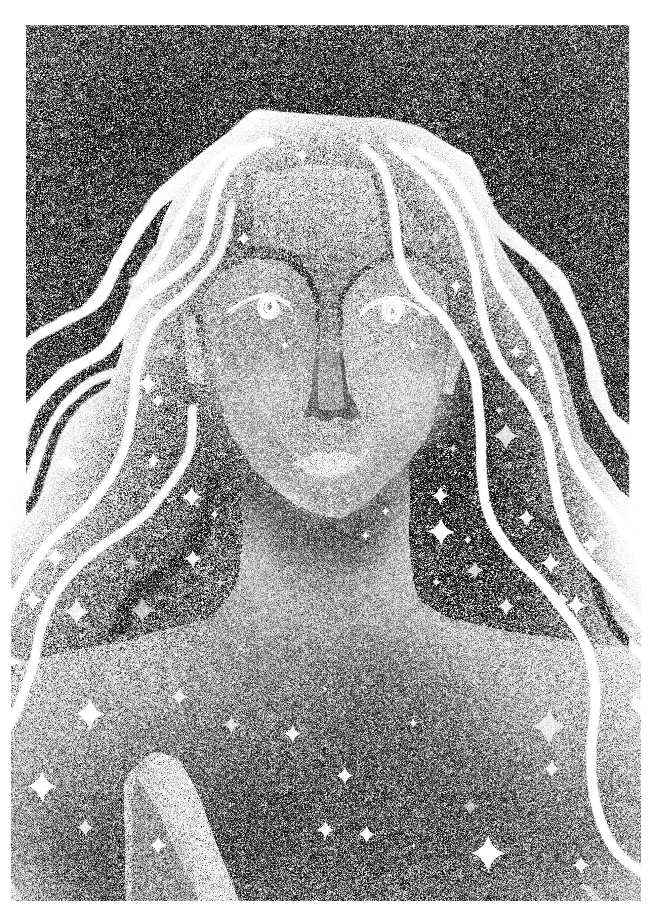
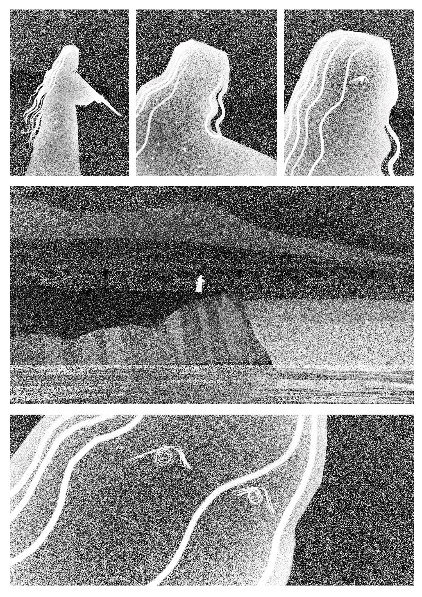
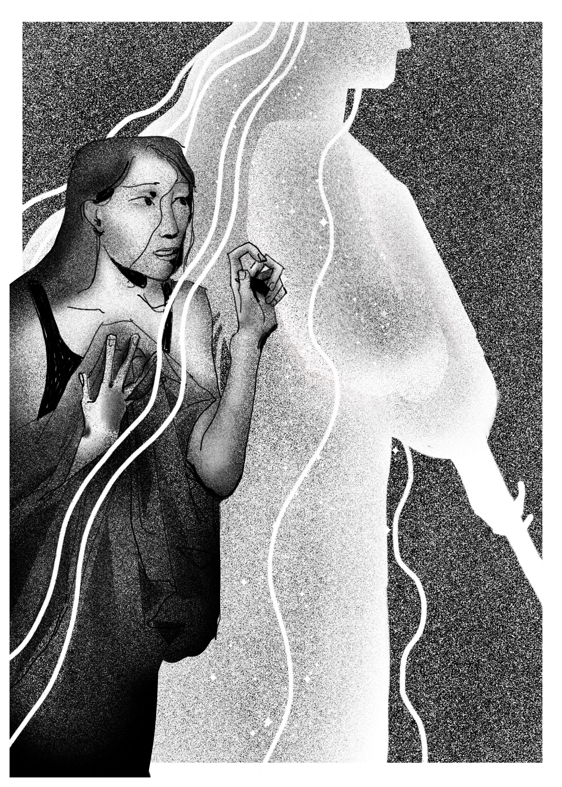
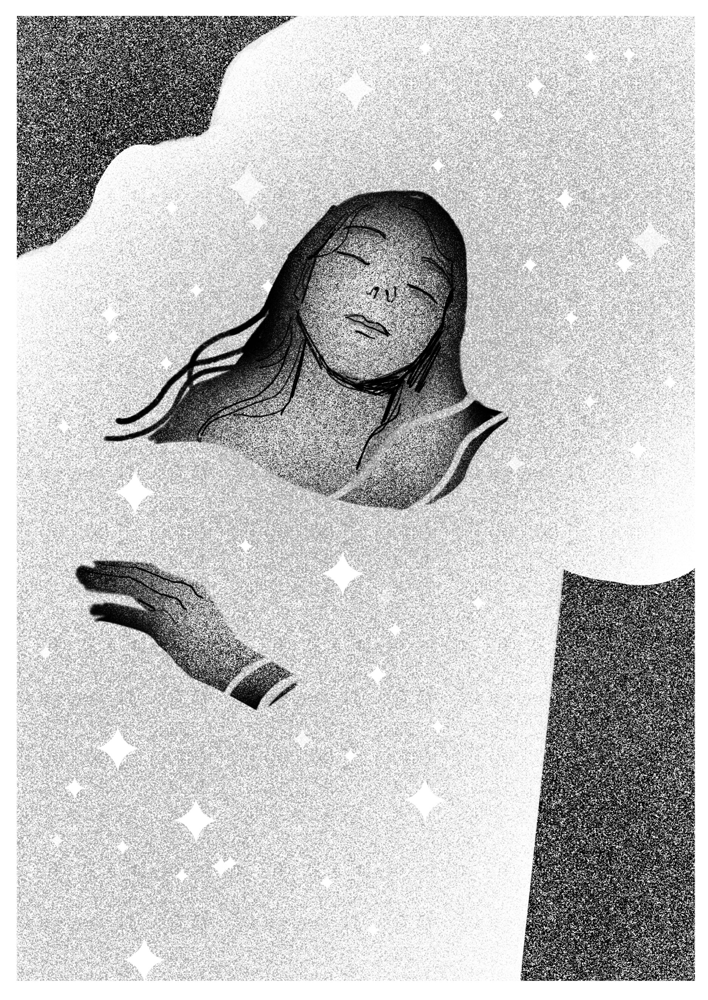
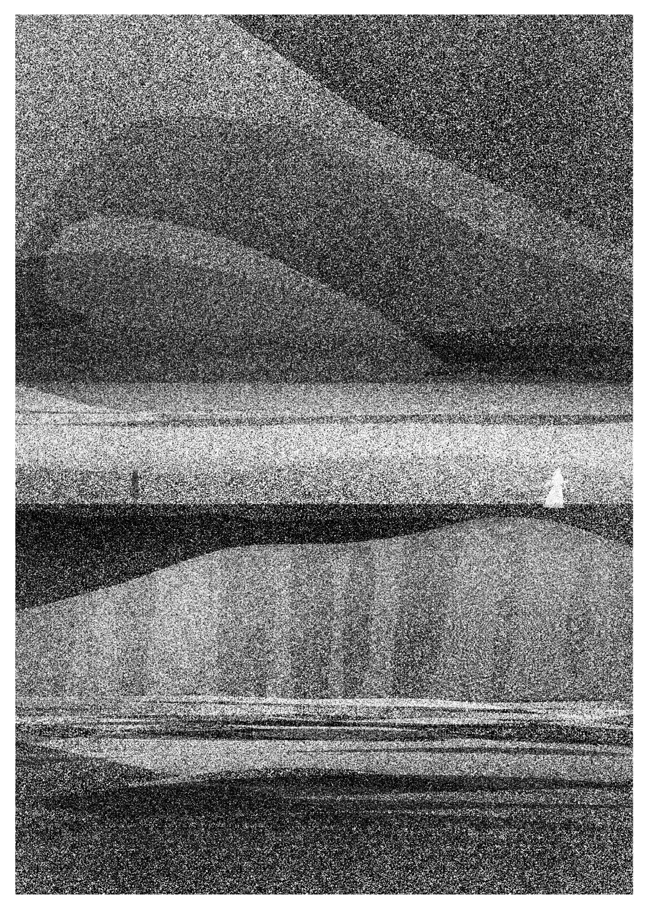

24 timers tegneresie er en årlig tradisjon som arrangeres hvert år i bergen av Grafill tegneserie og linjeforeningen Raster.
Som navnet kanskje røper foregår 24 timers tegneseriemaraton over 24 timer. Vi sitter sammen på galleri Blekk i Bergen og tegner fra kl.8 på lørdag til kl.8 på søndag.
Dette er et utdrag av min tegneserie jeg kalte Drømmefanger.
I forkant av maratonet har vi lov til å forberede en ide for hva vi vil tegne og et par skisser, men for min første gang forberedte jeg ingenting.
Jeg valgte å lage en tegneserie med fokus på det visuelle, med en surrealistisk forvirrende handling basert på en rar drøm jeg hadde.




24 timers tegneseriemaraton er en fantastisk øvelse i kreativitet, prioritering av tid og i å holde oppe motivasjon over lengre tid.